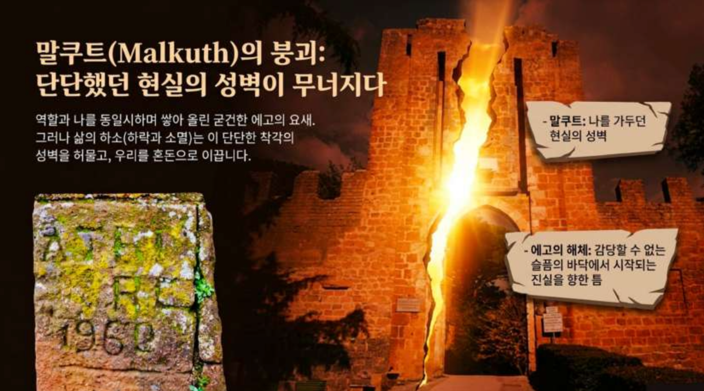

← 여정으로
♪
에츠하임으로 보는
본문 너머, 경로가 말을 거는 자리

01
Path ע · Ayin
핀세 · 아인의 시선
착각이 벗겨지며
시선이 바뀌는 자리
Enter

02
신앙 · 연금술
피스테라 · 계승의 여정
말려진 것이
다시 불려지는 자리
Enter

03
연금술
니그레도와 알베도
말리는 시간과
다시 불리는 시간
Enter
© 2026 Etz Chaim Journey. 이 여정의 모든 글과 사진은 소피아의 창작물입니다. 인용 시 출처를 밝혀주시고, 전체 전재나 상업적 사용은 금합니다.